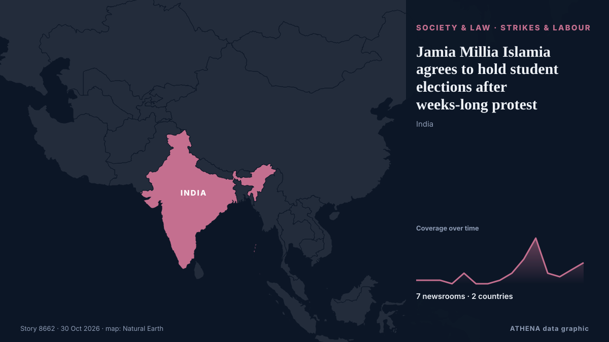

Jamia Millia Islamia agrees to hold student elections after weeks-long protest

After a second round of talks, JNUSU said the administration offered no concrete commitments on key demands. من Hindustan Times
نشرته بشكل مستقل 7 مصادر في دولتين منذ 15 أكتوبر، وأول من نشره Hindustan Times؛ والتغطية تتراجع. يقدّر ATHENA الخطر بأنه متزايد (4.0/10)، ويعود ذلك أساسًا إلى خطورة الضرر الموصوف وجودة الأدلة. الثقة 74٪ (مرتفعة)، وعدد المصادر المستقلة المؤكِّدة: 7، بمتوسط موثوقية للمصادر يبلغ 69٪.
لماذا يهم: تغيّر التعديلات القانونية والسياسية الحقوق والواجبات والخدمات العامة لمن تشملهم.
ما الذي تغيّر: 7 تقارير جديدة من 5 غرف أخبار خلال 24 ساعة حتى 30 أكتوبر.
العنوان الأول: Congress MP Detained During Jamia Millia Islamia Protests As Students Demand Union Polls
تُعرض العناوين بالإنجليزية كما نُشرت.
نظرة سريعة
اختير وقُيِّم وكُتب وفق منهجية ATHENA المنشورة. لا يتدخل أي محرر في الأحداث بعينها. كيف يُنتَج ›
| 15 Oct 06:45 UTC | 1 |
|---|---|
| 16 Oct 06:45 UTC | 1 |
| 17 Oct 06:45 UTC | 1 |
| 18 Oct 06:45 UTC | 0 |
| 19 Oct 06:45 UTC | 3 |
| 20 Oct 06:45 UTC | 0 |
| 21 Oct 06:45 UTC | 0 |
| 22 Oct 06:45 UTC | 1 |
| 23 Oct 06:45 UTC | 3 |
| 24 Oct 06:45 UTC | 7 |
| 25 Oct 06:45 UTC | 13 |
| 26 Oct 06:45 UTC | 3 |
| 27 Oct 06:45 UTC | 2 |
| 28 Oct 06:45 UTC | 4 |
| 29 Oct 06:45 UTC | 6 |
| 17 Oct 11:34 UTC | 0.0 |
|---|---|
| 19 Oct 15:57 UTC | 0.5 |
| 24 Oct 05:37 UTC | 2.5 |
| 24 Oct 07:16 UTC | 3.6 |
| 30 Oct 02:47 UTC | 4.0 |
لماذا هذه الأرقام
الأهمية
الخطر
الثقة
التغطية — من نشر الخبر ومتى
العنوان كما نُشر · يفتح الأصل- Hindustan Times · الهند · IndiaJNU students enter day 12 of indefinite hunger strike over rustication of JNUSU members, demand restoration of GSCASH and JNUEE
- Indian Express · الهند · IndiaNo students’ union for 20 years, 5 Jamia students go on hunger strike
- Indian Express · الهند · IndiaJamia students on hunger strike over students’ union demand face rustication, suspension
- Hindustan Times · الهند · IndiaJNU hunger strike: CPI(M) lawmaker John Brittas writes to President Murmu
- Indian Express · الهند · IndiaJamia sets up panel as hunger strike for students’ union enters second week
- The Hindu · الهند · IndiaJohn Brittas seeks President’s intervention as JNU students’ hunger strike enters 17th day
- Hindustan Times · الهند · IndiaJamia Millia Islamia cancels its 106th Foundation Day celebrations amid protest over students' union
- Times of India · الهند · IndiaAmid stir, Delhi's Jamia builds wall in front of gate; university denies connection
- Indian Express · الهند · IndiaJamia protest over students’ union intensifies, 10 detained including Congress MP
- NDTV · الهند · IndiaCongress MP Detained During Jamia Millia Islamia Protests As Students Demand Union Polls
- Hindustan Times · الهند · IndiaJamia Millia Islamia moves classes online, cites ‘safety of students' amid ongoing protests
- Indian Express · الهند · IndiaJamia shifts classes online as protest seeking students’ union elections enters 13th day
- NDTV · الهند · IndiaJamia Millia Islamia Students, Guards Clash During Protest, Classes Moved Online
- Scroll.in · الهند · IndiaJamia Millia Islamia shifts classes online on 13th day of students’ protest
- Hindustan Times · الهند · IndiaDemand for students' union, row over ‘slogans’ trigger tensions in Jamia Millia Islamia
- The Hindu · الهند · IndiaBJP asks Congress to clarify whether it endorses demands for separating Kashmir from India
- Times of India · الهند · IndiaClashes break out at Jamia protest, campus shut, classes go online
- Hindustan Times · الهند · IndiaJamia protest intensifies over student union demand; 4 students on hunger strike, heavy security outside campus
- The Hindu · الهند · IndiaJamia student protest intensifies amid restrictions, heavy police deployment
- Times of India · الهند · IndiaJamia protest: FIR against oppn MPs for trespassing on campus
- Hindustan Times · الهند · IndiaFIR filed against 2 Congress MPs for 'trespass' as Jamia university protest over student union demand continues
- Times of India · الهند · IndiaDelhi Police register case over Jamia Campus trespassing, defacement
- NDTV · الهند · IndiaJamia Students End Protest After Agreement With University Administration
- NDTV · الهند · IndiaJamia Millia Islamia Files Police Complaint Against Congress MPs For Trespassing During Stir
- Indian Express · الهند · India‘Won’t back down until we get a union’: Students’ strike at Jamia enters 14th day
- Hindustan Times · الهند · IndiaJamia students reject university’s appeal to end protest, say order on students’ union restoration is ‘ambiguous’
- Scroll.in · الهند · IndiaTwo Congress MPs booked on trespassing charges for entering Jamia Millia campus amid protests
- Indian Express · الهند · India‘All demands not met’: Jamia agrees to hold union polls but students’ stir still on
- The Hindu · الهند · IndiaJamia University orders student union polls within 15 days of constitution approval; two students continue hunger strike
- Times of India · الهند · IndiaAfter 2 decades, Jamia Millia Islamia announces resumption of student union elections
- Hindustan Times · الهند · IndiaFresh protests erupt at Jamia Millia Islamia hours after election announcement; students detained
- NDTV · الهند · IndiaJamia Students Reject University's Union Polls Offer, Refuse To End Protest
- Scroll.in · الهند · IndiaPolice detain several students at Jamia Millia university as protests continue
- Indian Express · الهند · IndiaWhy I am on a hunger strike as a Jamia student
- Indian Express · الهند · IndiaJamia protest Day 16: Minister says negotiations on; students say talks ended in deadlock
- Indian Express · الهند · India‘Campus vandalised’: Jamia to hold exams online, virtual classes extended until Jan 2027
- Hindustan Times · الهند · IndiaJamia alleges campus vandalism amid protests, says university gates, CCTV cameras damaged
- Al Jazeera English · قطر · QatarStudents on hunger strike in India demand restoration of student union
- Scroll.in · الهند · IndiaJamia protests: Two NSUI members detained, exams to be held online
- Indian Express · الهند · IndiaJamia turns 106 with no celebrations as students’ union protest enters 18th day